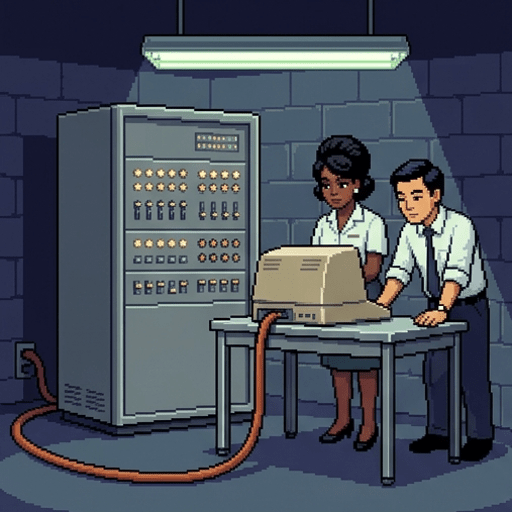
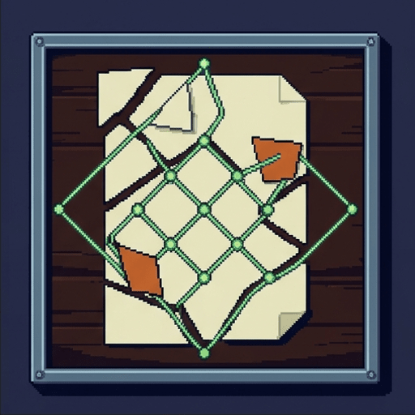
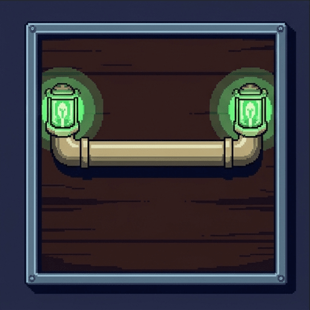
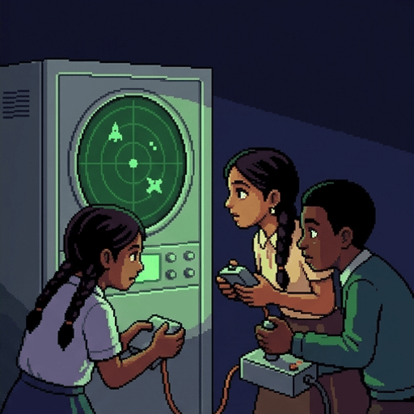
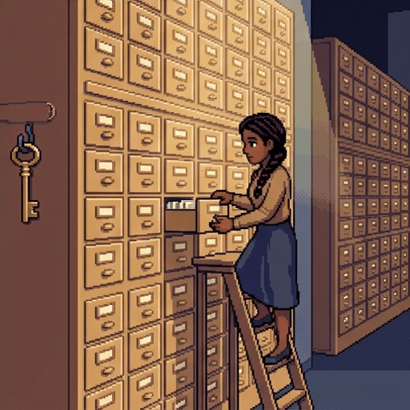
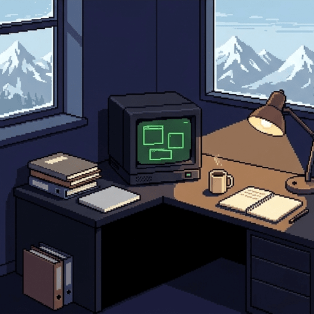
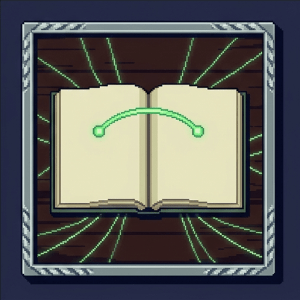
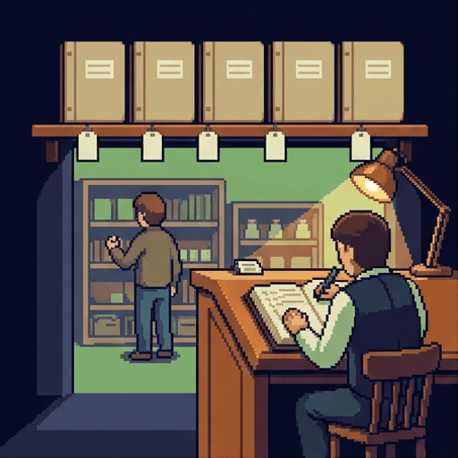
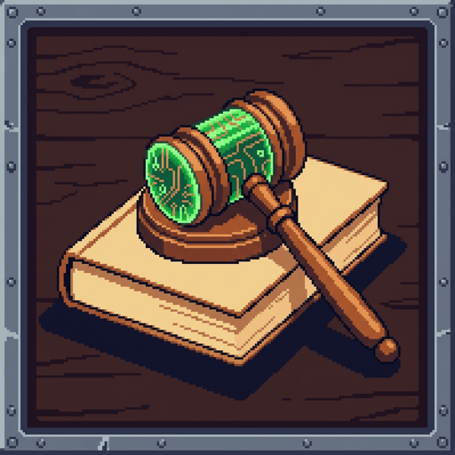

The Network With No Middle
Nobody runs the internet. There is no control room, no master switch, and no company that owns it.
That is not an accident. It is the result of a handful of decisions made by particular people, for particular reasons, mostly before 1975.
Use → (or Next) to advance and reveal points one at a time. F = fullscreen.
Two Things Happen at Once
Every piece of the internet was designed by someone who wanted something. And every piece, once built, changed what everybody else could want.
- Soldiers, scientists, and people who wanted to play games all pushed the design in different directions.
- What they built then decided which things would be easy to do later, and which would be nearly impossible.
- Nobody voted on any of it. The choices were technical, and the consequences were not.
The Internet Is Not the Web
These two words get used as if they mean the same thing. They do not, and almost nothing else makes sense until the difference is clear.
- The internet is the wiring. Its whole job is moving small chunks of data between machines.
- The web is one thing people built on top of that wiring, in 1989, twenty years later.
- Email, video calls, game servers and messaging apps also run on the internet and are not the web.
- The wiring does not know or care which of them it is carrying.
Six Statements, No Right Answers
Say where you stand now. You will see all six again at the end.
A well-designed technology is neutral, and only its uses can be good or bad.
Something no single person controls is safer than something a government controls.
A network should be allowed to deliver urgent traffic ahead of entertainment.
Inventors deserve to be paid when their invention makes other people rich.
Being tracked online is a fair price for services that cost you nothing.
The people who write the code end up making rules the rest of us live under.
Decision One: Build It With No Centre
In the early 1960s, sending a message meant opening a line and holding it. A telephone call reserved a physical path from end to end for as long as you talked.
- That worked for voices and was hopeless for computers, which send in short bursts and then go quiet.
- It also meant every call passed through a switching centre. Break the centre and everything stops.
- Computers were rare and expensive. A university might have one, and researchers elsewhere could not touch it.
The Fix: Cut the Message Up
Instead of reserving a line, chop the message into small numbered pieces called packets and let each one find its own way. Send one, then start breaking things.
What Just Happened
Each packet carries the address it is going to, the address it came from, and its number in the sequence.
- A machine that passes packets along is a router. It looks at the address and picks a direction.
- No router knows the whole route. It only knows which neighbour is a step closer.
- Packets from one message can travel completely different paths and arrive out of order.
- The receiving machine puts them back in order using the numbers, and asks again for any that never came.

1964 / 1969
Two Groups Wanted This, for Different Reasons
Packet switching was worked out twice, independently, by people with almost nothing in common.
- Paul Baran, at a defence research company, wanted communication that survived losing parts of itself.
- Donald Davies, at a British physics lab, wanted computers to stop wasting expensive line time.
- Survivability and thrift are different values, and both pointed at the same shape.
- ARPANET, the first real network, was funded by the US defence department and built to share scarce computers.
Checkpoint: The Nuclear War Story
People often say the internet was built so it could survive a nuclear attack. That story is half right, and the half that is wrong is the interesting half.
The story is invented. Nobody working on these systems ever thought about surviving an attack.
The story is exact. ARPANET was commissioned and built specifically to keep working during a nuclear war.
Baran's survivability work and ARPANET were separate projects that arrived at the same technique.
What Having No Centre Did
There is no switchboard to seize, no headquarters to raid, and no single machine whose failure stops the network. Damage routes around itself, whether the damage is a broken cable or a government.
A country can block its own connections to the outside, and has to keep doing it, machine by machine, forever.
There is also nobody in charge. No one can be required to check that traffic is safe, remove something harmful, or take responsibility when the network carries an attack.
Nobody can switch off a flood of malicious traffic centrally, because there is no centre at which to switch it off.
Decision Two: Make the Network Stupid
Once packets worked, a harder question arrived. How clever should the network itself be?
- The telephone companies had an answer. Put the intelligence in the network and sell services from it.
- On that model, a new kind of communication needs the network's owner to build it and agree to it.
- The researchers building ARPANET chose the opposite, and wrote down why.

1981
Smart Ends, Dumb Middle
The rule is called the end-to-end principle. The network moves packets and does nothing else. Everything clever happens on the machines at the two ends.
- The network does not know whether a packet is part of an email, a film, or a game.
- It cannot know, and the design says it should not need to.
- So inventing a new kind of thing to do online needs nobody's permission and no change to the wiring.
What a Stupid Network Did
Almost everything you use exists because of this one decision.
- The web, streaming video, online games and messaging were all added by people who never asked a network owner.
- That is called permissionless innovation, and it is rare. Most industries do not work this way.
- The cost is that the network cannot tell urgent traffic from trivial traffic, because it cannot tell them apart at all.
- A surgeon's video link and a film get the same indifferent treatment.
Decision Point: Should the Wiring Play Favourites?
Not graded. This is a live argument, and it is usually had under the name net neutrality.
Yes. Urgent things should arrive first, and the network could easily arrange it.
No. Once owners can choose, they will choose in their own interest.
Only for a short list of emergency uses, fixed by law and open to inspection.
Nobody Ordered Email
ARPANET was funded so researchers could run programs on distant computers. Within a few years, that is not mainly what it was doing.
- In 1971 Ray Tomlinson wrote a small program to leave messages for people on other machines.
- It was a side project. Nobody had asked for it and it was in nobody's plan.
- He needed a character to separate the person from the machine, and picked @ because it was unused.
- Within two years, messages between people were most of the traffic on the network.

And Nobody Ordered the Games
In 1962, when computers were expensive machines for serious calculation, students at MIT used one to build Spacewar!
- It spread to almost every research machine of its type, because people who saw it wanted to play it.
- It helped make the case that computers were for interacting with, not just for submitting jobs to.
- In 1978 two students in Essex built a shared world players could all be inside at once, and called it a MUD.
- Every online game with other people in it is descended from that experiment.
The Users Changed What It Was For
A network built for sharing expensive machines turned into a network for talking and playing, and the people who funded it did not decide that.
- This only happened because of decision two. Nobody had to approve email or games.
- The founders' values shaped the architecture, and then the users' values reshaped its purpose.
- Both directions were running the whole time, and neither group was in charge of the other.
Fill In: The First Two Decisions
Complete the summary so far:
A message is cut into numbered pieces called
packets,
and each piece finds its own way, so there is no
centre
whose loss would stop the message. The network was also built to know
nothing
about what it is carrying, which is why Tomlinson could add email without asking anyone's
permission.
Decision Three: Publish the Rules, Own Nothing
For two machines to exchange packets they must agree in advance on exactly what the bytes mean. A written agreement like that is a protocol.
- A protocol is not a program. It is a document saying what a correct machine must do.
- Anyone can read one, and anyone can write software that obeys it.
- The documents are called RFCs, short for Request for Comments, which is how they were meant to sound.
- The first was written in 1969 by a graduate student who worried he was overstepping.
Where That Habit Came From
The people writing these rules were academics, and they did what academics do. They published, argued in public, and let anyone use the result.
- Their working motto was rough consensus and running code. Show something that works, then argue.
- No government set the standards, no company owned them, and no fee was charged.
- A rival set of standards, designed properly by international committee, lost. It was slower and needed permission.
Checkpoint: Open Rules
Anyone can build something that joins the network without needing a license or permission.
Public rules are harder to attack, because an attacker cannot see how any of the system works.
Public rules can be rewritten quickly whenever a better idea comes along.

Decision Four: Somebody Has to Keep the Names
Machines find each other by number. People cannot remember numbers, so names had to be attached to them.
- At first one person kept a single file listing every machine on the network, and posted updates.
- That stopped working, so the job was split into a tree of name servers, called the DNS.
- Type a name and your machine asks the tree what number goes with it, then connects to that number.
- The tree has a top. Someone has to decide what is in it.
The One Part With a Middle
Everything else about the internet was built to have no centre. Names are the exception, and it is the exception that gets used.
- A name can be taken away. The machine stays exactly where it was, and nobody can find it.
- Governments block sites by ordering name servers to stop answering, which is far easier than blocking packets.
- The organization that oversees the top of the tree is one of the few places the internet can be leaned on.
Decision Point: Who Should Hold the Keys?
Not graded. This one is argued about at the United Nations, seriously and often.
An independent non-profit, answering to engineers and users rather than to states.
An international body of governments, in which each country gets a say.
Nobody. Names should be spread out so that no single group can take one away.

1989
Decision Five: A Layer for Documents
Twenty years after ARPANET, a physics laboratory in Switzerland had a filing problem. Thousands of scientists, all with documents on incompatible machines.
- Tim Berners-Lee proposed a system where any document could point directly at any other document.
- His manager's written response was that it was vague, but exciting.
- It was built for physicists sharing papers. Nothing about shops, videos or arguing with strangers.

Three Small Inventions
The web is not complicated. It is three ideas that fit together.
- A URL is an address that names one document anywhere in the world.
- HTTP is the protocol for asking a machine to send you the document at that address.
- HTML is the format the document arrives in, including its links to other addresses.
- A link only needs the sender's permission, never the receiver's. That asymmetry is what let it grow.
Decision Point: Should They Have Owned It?
In April 1993 CERN signed a document putting the web's technology into the public domain. Anyone could use it, build on it, and sell things with it, forever, for nothing.
No. Charging for it would have killed it, and something worse would have won instead.
Yes. Public money paid for it, and the public should have shared in what it earned.
They should have kept it free to use but attached conditions to keep it open.
Checkpoint: Which Layer Is Which?
The internet existed for about twenty years before the web was invented.
Email travels over the internet but is not part of the web.
A video call uses the internet without using the web.
The web is the wiring, and the internet is the set of pages that runs on it.
Turning off the web would stop packets from moving between machines.
Decision Six: Give It a Memory
HTTP was designed to forget. You ask for a document, the machine sends it, and the conversation is over. It has no idea who you are next time.
- That is called being stateless, and it is why the web could handle so many people so cheaply.
- It also made shopping impossible. A basket needs the shop to remember you between pages.
- In 1994 an engineer at Netscape solved it with a small file the site asks your browser to keep and hand back.
- He called it a cookie. It was a fix for shopping baskets.

What a Shopping Basket Turned Into
A cookie lets a site recognize you when you come back. Nothing in the design says the site has to be the one you are visiting.
- Pages load images and scripts from other companies, and those companies can set cookies too.
- The same company appears on thousands of sites, so it sees you across all of them.
- None of that required a new invention. It is the shopping basket fix, used as written.
- Watching people is what makes advertising valuable, and advertising is why the web is free.
Checkpoint: What a Cookie Is
A cookie is a small piece of data a site asks your browser to keep and hand back later.
Cookies were invented to solve a problem with shopping baskets.
A company whose code appears on many sites can recognize you across all of them.
A cookie is a program that runs on your computer and can read your files.
Following people between sites needed a new invention that browsers were not built to allow.
The Bargain Nobody Signed
There was never a vote on paying for the web with attention instead of money. It was settled by a few companies finding out what worked.
- Charging money for pages was tried repeatedly in the 1990s and mostly failed.
- Advertising did not fail, so it became the default, and then it became the assumption.
- The result is that most things online are free, and that being measured is the ordinary condition of using them.

1999
Code Is Law
The legal scholar Lawrence Lessig gave this whole pattern a name. Software, he argued, regulates what people can do in the same way that law does.
"In real space we recognize how laws regulate—through constitutions, statutes, and other legal codes. In cyberspace we must understand how a different 'code' regulates—how the software and hardware that make cyberspace what it is regulate cyberspace as it is."
— Lawrence Lessig, Code and Other Laws of Cyberspace, 1999
- A rule enforced by software needs no police, no court, and no vote. It simply is not possible to break.
Fill In: The Last Four Decisions
Complete the second half of the account:
The internet's rules are published where anyone can read them, so building something that joins the
network needs no license.
Names are handled by a tree called the DNS,
the one part with a top, and therefore the one part where a site can be
blocked.
And the web costs you nothing to use because it is paid for by
advertising.
Both Directions, One Story
Six decisions, each made by people with reasons, each now a rule the rest of us live inside.
- Values into design. Survivability, thrift, academic openness, physics filing and shop baskets each left a permanent mark on the shape of the thing.
- Design into values. No centre made censorship hard, a dumb network made permission unnecessary, names made a chokepoint, and a basket fix made surveillance ordinary.
- None of the six was a decision about how people should live, and all six turned into one.
Where You Stand Now
Here is where you started. Re-rate each statement and see what moved.
The internet is not a natural feature of the world, and it did not have to look like this. It looks like this because particular people solved particular problems in particular years, and the rest of us inherited the answers.
Visit every slide, answer each question correctly, and rate all six statements to complete the lesson.